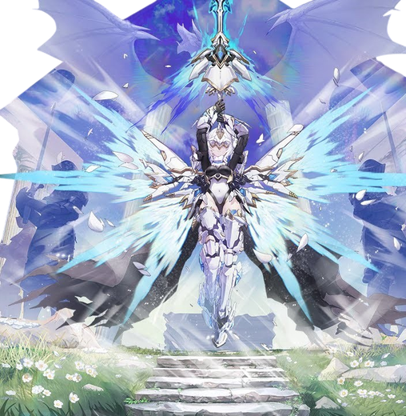

基本データ
- コスト
- 2.5
- 体力
- 未入力
- 赤ロック
- 33
- 動画
- 登録動画

Move Table
| 射撃 | 名称 | 弾数 | 威力 | 備考 |
|---|---|---|---|---|
| メイン射撃 | 聖光流弾 | 7 | 210 | リロードが遅いBR |
| 背面メイン射撃 | 357 | - | 消費1発で2発同時発射 | |
| Nサブ射撃 | X-03アーマー | 2 | 69~344(421) | その場からビーム連射 |
| 横サブ射撃 | 69~249(344) | - | オールレンジ攻撃 | |
| 後サブ射撃 | 聖光衝撃 | 2 | 667 | 照射ビーム |
| 後サブ格闘 | 聖杯の加護 | 100 | - | アカツキ状態へ移行 |
| 強化状態メイン射撃 | 聖光鋭刃 | 4 | 210 | 足を止めて撃つ斬波 |
| 強化状態後サブ射撃 | 聖光衝撃 | 1 | 180 | 短射程照射ビーム |
| 強化状態後格闘 | 聖光バリア | 100 | - | 正面にバリア展開 |
| 強化状態サブ格闘 | 聖光の羽翼 | 2 | - | 特殊移動 |
| 格闘 | 名称 | 入力 | 弾数 | 威力 | 備考 |
|---|---|---|---|---|---|
| メイン格闘 | 円卓剣術 | NNN | - | - | 573 サブ射派生 |
| ソロモン王の剣 | N→サブ射 | - | - | 679 | 前方に輸送 |
| 横格闘 | 円卓剣術 | 横N | - | - | 557 サブ射派生 |
| ソロモン王の剣 | 横→サブ射 | - | - | 666 | |
| Nサブ格闘 | 裂爪 | Nサブ格x4 | - | 714 | フワ格から連撃 |
| 横サブ格闘 | 裂爪 | 横サブ格x3 | - | 714 | 回り込みから連撃 アカツキ時 |
| 強化状態Nサブ射撃 | 聖裁の剣 | Nサブ射 | 1 | 450 | 縦に斬撃 |
| 強化状態横サブ射撃 | 横サブ射 | - | 390 | 横に斬撃 | |
| 強化状態メイン格闘 | 白龍の舞い | NNN | - | - | 614 サ射派生 |
| 最後の裁き | N→サブ射 | - | - | 883 | 巨大な剣で連撃 |
| 強化状態横格闘 | 白龍の舞い | 横N | - | - | 611 サ射派生 |
| 最後の裁き | 横→サブ射 | - | - | 846 | |
| バーストアタック | 名称 | - | 威力 | ||
| F/B/SMD | - | 備考 | |||
| バーストアタック | 聖杯よ、この輝かしき勝利を捧げん | - | 1064/977/887 | 乱舞系 | |
| 後バーストアタック | 聖裁の剣よ、この世のすべての悪を断つ | - | 829/759/690 | 5凸で解放。単発振り下ろし |